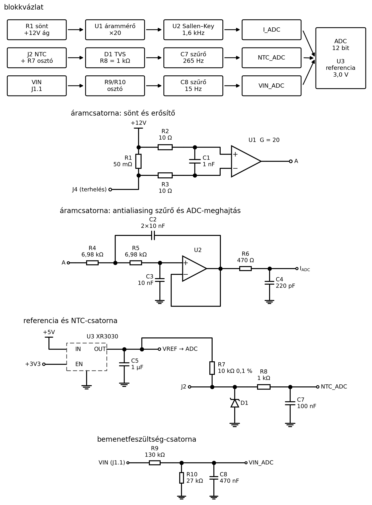
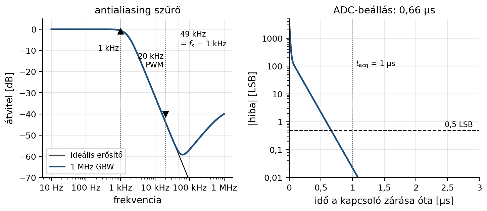
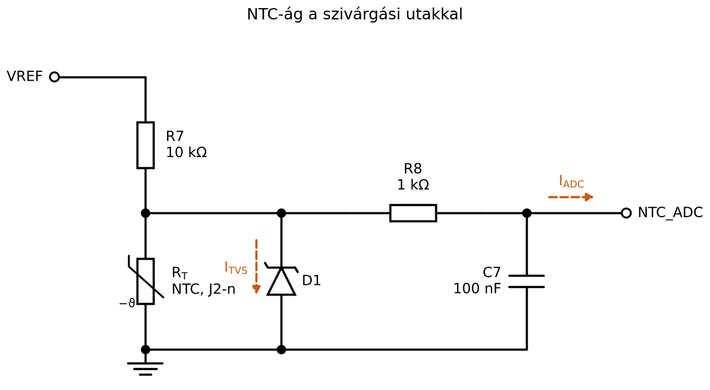
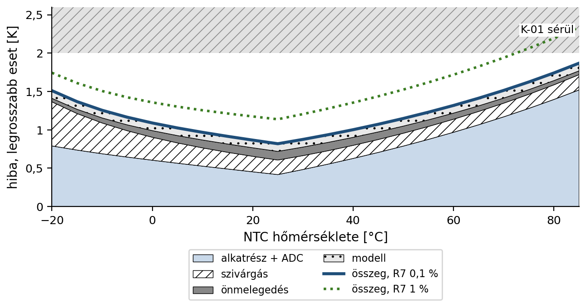

A második záróprojektben a szenzormodul mérőláncát tervezed meg: a terhelőáramot, az NTC hőmérsékletét és a bemeneti feszültséget kell a mikrovezérlő ADC-jéig eljuttatni, adott pontossággal. A végére:
A tápot az 1. záróprojekt: védett tápegység 12 V-ról 5 V-ra és 3,3 V-ra adja (+12V, +5V, +3V3, +3V3A). Építünk az Érzékelők illesztése és a jelút hibaköltségvetése, a Mintavétel, kvantálás és ADC, a DAC, PWM, feszültségreferenciák és ratiometrikus mérés, a Komparátor, hiszterézis és aktív szűrők, a Valós paraméterek: offset, zaj, sávszélesség, slew rate, stabilitás és az ESD- és túlfeszültség-védelem az áramkörben eredményeire. Minden adat mintaadat.
A Tervezési átvizsgálás és átadás a NYÁK-tervezésnek egyetlen nyitott „fontos” tétellel zárult: az árammérés hibája 2 A-nél 5,6 %, a követelmény 5 %. A megoldás egy pontosabb referenciának tűnik. Csakhogy a referencia a mérőlánc közös alapja: ha lecseréled, megváltozik a méréstartomány, az NTC-ág, a bekapcsolási sorrend. Ebben a projektben egy változtatás következményeit követed végig, amíg minden csatorna újra rendben lesz.

Három jel, három eltérő természet:
Az analóg elemek földje az AGND, amely az NT1 csillagpontban (J1.2) kapcsolódik a többi földhöz (Földelési stratégiák és visszatérő áramutak).
| Jel | Mit kér | Elfogadási feltétel |
|---|---|---|
| K-01 | NTC-hőmérséklet | −20…85 °C: legfeljebb ±2 K, kalibrálás nélkül |
| K-09 | terhelőáram | 0…2 A: ±100 mA (±5 %), −20…60 °C, kalibrálás nélkül |
| K-10 | bemeneti feszültség | 9…16 V: ±5 %, sávszélesség ≥ 10 Hz |
| K-06 | tesztimpulzus | a mikrovezérlő lábába legfeljebb 1 mA (láb ≤ 3,6 V) |
| ML-01 | áramjel szűrése | 1 kHz: ≤ 1 dB; 20 kHz: ≥ 40 dB |
| ML-02 | mintavétel | kS/s az áramcsatornán, a 20 kHz-es PWM ne hajtódjon vissza |
| ML-03 | ADC-beállás | 1 µs mintavételi idő alatt ≤ 0,5 LSB hiba |
| ML-04 | az árammérő erősítő gyorsasága | nagy áramugrásra a 3. záróprojekt: MOSFET-es meghajtó induktív terheléshez billenési szintjéig ≤ 1 µs |
(A kS/s ezer minta másodpercenként.)
Az Érzékelők illesztése és a jelút hibaköltségvetése megmutatta, hogy az árammérés domináns tagja a 3,3 V-os sín mint referencia (±2 %). ML-D1: külön referencia, a fiktív U3 „XR3030”: 3,0 V ±0,5 %, 50 ppm/K, az +5V-ról. Az ADC referencialába és az NTC-osztó is erről megy. Az árammérés jele változatlan (2 A → 2,0 V), a 3,0 V-os méréstartomány tehát elég.
A változtatásnak két mellékhatása van, és mindkettőt meg kell fogni:
A sönt a terhelés pozitív ágában van (D-03), a szabadonfutó dióda katódja előtte: így a sönt a szabadonfutás alatt is méri az áramot, a közös módusú feszültsége pedig nem ugrál a PWM-mel. A SONT_N hálózat kivezetésre (J4) megy, ezért mindkét érzékelő vezetékbe R2, R3 = 10 Ω kerül, közéjük C1 = 1 nF a nagyfrekvenciás zavar ellen. Az U1 árammérő erősítő bemeneti árama ( µA) ezeken feszültséget ejt; mivel mindkét oldalon van ellenállás, csak a különbségük számít:
Itt a két ellenállás eltérése (1 %-osoknál legfeljebb 0,2 Ω), µA a bemeneti áramok különbsége: 12 µV, a söntön 0,24 mA. A védelem tehát gyakorlatilag ingyen van – ha az ellenállások kicsik és egyformák.
Az U1 kimenetét (AMP_OUT) nemcsak a mérőlánc használja: a 3. záróprojekt: MOSFET-es meghajtó induktív terheléshez komparátora is ezt figyeli, a szűrő előtt. Ezért az erősítővel szemben egy gyorsasági követelmény is áll (ML-04): nagy áramugrásnál a kimenet legfeljebb 1 µs alatt érje el a billenési szintet. Ezt az átvizsgálás az adatlap sávszélesség- és slew rate-adatai (Valós paraméterek: offset, zaj, sávszélesség, slew rate, stabilitás) alapján ellenőrzi; mintaadatként 400 kHz sávszélességet veszünk, ami elsőrendű modellben kb. µs késést jelent.
A szűrő a Komparátor, hiszterézis és aktív szűrők Sallen–Key-e ( kΩ, nF, nF, kHz), utána R6 = 470 Ω és C4 = 220 pF az ADC lábánál (Mintavétel, kvantálás és ADC). A mintavételi frekvencia ML-D5: kS/s. kS/s mellett a 20 kHz-es PWM-zavar éppen 0 Hz-re hajtódna vissza (), vagyis állandó mérési hibaként látszana, amelyet semmilyen szoftveres szűrés nem vesz le.

A valós, 1 MHz-es erősítővel 60 kHz fölött a csillapítás visszaromlik (1 MHz-en kb. 40 dB); a buck 500 kHz-es zavarára nézve ez még rendben van, de nem szabad „végtelen” szűrőre számítani.

A védelem az ESD- és túlfeszültség-védelem az áramkörben elrendezése: D1 a csatlakozónál, R8 = 1 kΩ és C7 = 100 nF az ADC felé (25 °C-on Hz). Az R7 a mérő csomópont oldalán marad, R8 nincs a mérőágban. A szivárgóáramok viszont ellenállásokon folynak át, és feszültséghibát okoznak, amelyet az érzékenységgel () lehet kelvinbe átváltani:
Mértékegység:
.
A mintaadat:
µA. A teljes hibaösszeg négy tételből áll: (1) alkatrész +
ADC:
és
±1 %, R7 tűrése a hőfoktényezővel, ADC ±4 LSB, a sarkok legrosszabb
kombinációja (budget.wca); (2) szivárgás; (3) önmelegedés
,
mW/K; (4) a hőmérsékletszámítás modellhibája,
Steinhart–Hart-illesztéssel kb. 0,1 K (Érzékelők
illesztése és a jelút hibaköltségvetése; a puszta B-modell hibája
ennél nagyobb).
Gondolkodj előre: a 85 °C-os tartomány végén melyik tag a legnagyobb, és a hidegben melyik nő meg?

A válasz: melegben az alkatrész- és ADC-tag nő meg (kicsi az érzékenység), hidegben a szivárgás (nagy : 8,9 kΩ). Az 1 %-os, 100 ppm/K-es R7-tel a hiba 85 °C-on 2,33 K: sérül. ML-D2: R7 = 10 kΩ 0,1 %, 25 ppm/K, ekkor 1,87 K.
R9 = 130 kΩ, R10 = 27 kΩ, C8 = 470 nF a VIN (J1.1) és az AGND között. kΩ, Hz. A legrosszabb eset a Derating, tűrésanalízis és megbízhatóság módján: 1 %-os, 100 ppm/K-es ellenállások, a referencia tűrése és driftje, ±0,5 µA lábszivárgás. A nagy ellenállásértékek miatt fordított polaritásnál (−16 V) is csak mA folyik a láb alsó védődiódáján.
Az áramcsatorna 3,3 V-os referenciával 113,5 mA (5,7 %; az Érzékelők illesztése és a jelút hibaköltségvetése 112 mA-ét a védelem, a szűrő és a szivárgás tételei növelik), XR3030-cal 78,7 mA (3,9 %). A domináns tag innen a sönt tűrése (20 mA). A Monte Carlo (mag 83, 20 000 minta, minden tétel egyenletes eloszlású) szórása 16,7 mA, a hibák 99,9 %-a kb. 48 mA-en belül marad. A legrosszabb eset garantál; a Monte Carlo megmutatja, hogy a tipikus példány jóval pontosabb. Az elfogadási feltétel itt mégis a legrosszabb eset: a K-09 minden példányra, kalibrálás nélkül kéri a pontosságot.
A kényszerlista új sora a referencia (VREF): hidegítés az ADC lábánál, U3 az ADC mellett. A MERES sor kiegészül: a SONT-vezetékek Kelvin-bekötéssel, párban, az R2, R3, C1 az U1 mellett. Az átvizsgálás megállapításai a lenti kódban vannak; egyetlen nyitott kérdés érint valódi kockázatot: a J2 kábelen egy 12 V-os rövidzár túlterhelné az ADC lábát. Ez nem szerepel a követelményekben, ezért a döntés a megrendelőé (NY-M1, nem blokkoló).
Továbbvitt eredmény. A mérőlánc mintája: közös referencia (3,0 V) az ADC-nek és a ratiometrikus NTC-osztónak; high-side sönt kis, egyforma védő ellenállásokkal, Sallen–Key és R6/C4 meghajtás, kS/s; a védelem szivárgása a hibaköltségvetés tétele. A Vegyes vizsgafeladatsor erre épít.
Továbbvitt eredmény. Ha a referenciát, egy osztót vagy egy védőelemet módosítasz, minden csatorna méréstartományát, hibaösszegét és indulási sorrendjét újra kell ellenőrizni.
1. Áram, 2 A-nél. Nagyság szerint: sönt 20; referencia, erősítéshiba, offset 10-10-10; közös módus 8; referenciadrift, sönt-TCR, offsetdrift 4,5-4,5-4,5; erősítésdrift 2,25; ADC offset 1,46, INL 1,10, kvantálás 0,37; sönt önmelegedés 1,0; szűrő offset és driftje 0,50 + 0,09; bemeneti ellenállások és ADC-szivárgás 0,24 + 0,24. Összeg: 78,7 mA ≤ 100 mA. Egy LSB 3,0 V/4096 = 0,732 mV, azaz 0,732 mA.
2. NTC, 85 °C. Ω, Ω, mV/K (3,0 V-on). Szivárgás: mV → 0,20 K. Önmelegedés: mW → 0,05 K. Alkatrész + ADC (sarkok): 1,52 K. Összeg: 1,87 K ≤ 2 K.
3. Bemeneti feszültség, 16 V. A láb legrosszabb esete 2,83 V < 2,978 V: nincs levágás. A 30 V-os, 1 ms-os impulzusnál V, a végérték 5,16 V, ms, a csúcs V ≤ 3,6 V. A legnagyobb relatív hiba 9 V-on 3,9 %.
4. Zavar a szűrő után. A szolenoid árama 16 V-on, 50 %-os kitöltésnél mA csúcstól csúcsig; az alapharmonikus amplitúdója kb. 4 mA, 43,8 dB csillapítás után 26 µA. Józanész: elhanyagolható – a szűrő igazi ellenfele a kapcsolási élek tüskéi.
Az árammérés a három referenciával:
import numpy as np
from elkit import extra_elch25a as p
for ref in ("3v3", "xr", "prec"):
b = p.current_budget(ref=ref)
print(f"{p.REFS[ref]['label']:26s} WCA {b.worst():6.1f} mA, RSS {b.rss():5.1f} mA, "
f"domináns: {b.dominant().name}")
mc = p.current_mc()
q999 = np.quantile(np.abs(mc.values), 0.999)
print(f"MC (XR3030): szórás {mc.std:.1f} mA, |hiba| 99,9 %-a ≤ {q999:.1f} mA, mag {mc.seed}")+3V3 sín (±2 %) WCA 113.5 mA, RSS 49.0 mA, domináns: referencia kezdeti
XR3030 (±0,5 %, 50 ppm/K) WCA 78.7 mA, RSS 28.9 mA, domináns: sönt tűrése
0,1 %, 10 ppm/K WCA 67.1 mA, RSS 26.8 mA, domináns: sönt tűrése
MC (XR3030): szórás 16.7 mA, |hiba| 99,9 %-a ≤ 48.1 mA, mag 83Az NTC- és a VIN-csatorna:
for t in (-20, 25, 60, 85):
regi = p.ntc_worst(t, rs_tol=0.01, rs_tcr=100e-6)
print(f"{t:4d} °C: R7 1 %: {regi:.2f} K, R7 0,1 %: {p.ntc_worst(t):.2f} K")
for r2 in (30e3, 27e3):
hiba, _ = p.vin_error(9.0, r2=r2)
_, lab = p.vin_error(16.0, r2=r2)
print(f"R10 = {r2 / 1e3:.0f} kΩ: hiba 9 V-on {hiba:.2f} %, láb 16 V-on {lab:.3f} V")
t, u = p.vin_pulse()
print(f"impulzuscsúcs a lábon: {u.max():.2f} V") -20 °C: R7 1 %: 1.74 K, R7 0,1 %: 1.51 K
25 °C: R7 1 %: 1.14 K, R7 0,1 %: 0.82 K
60 °C: R7 1 %: 1.72 K, R7 0,1 %: 1.32 K
85 °C: R7 1 %: 2.33 K, R7 0,1 %: 1.87 K
R10 = 30 kΩ: hiba 9 V-on 3.86 %, láb 16 V-on 3.084 V
R10 = 27 kΩ: hiba 9 V-on 3.91 %, láb 16 V-on 2.830 V
impulzuscsúcs a lábon: 2.97 VA jegyzőkönyv és a nyomon követés:
from elkit import extra_elch24 as x
records = p.chain_records()
print(p.format_records(records))
for jel, allapot in x.trace(p.chain_requirements(), records).items():
if allapot != "van bizonyíték":
print(jel, "→", allapot)jel mennyiség érték határ eredmény köv.
SZM-M01 árammérés 2 A-nél, WCA 3.94 % ≤ 5 % rendben K-09
SZM-M02 NTC-hiba 85 °C-on 1.87 K ≤ 2 K rendben K-01
SZM-M03 NTC-hiba −20 °C-on 1.51 K ≤ 2 K rendben K-01
SZM-M04 VIN-hiba 9 V-on, WCA 3.91 % ≤ 5 % rendben K-10
SZM-M05 VIN-láb 16 V-nál, WCA 2.83 V ≤ 2.98 V rendben K-10
SIM-M01 csillapítás 1 kHz-en 0.595 dB ≤ 1 dB rendben ML-01
SIM-M02 csillapítás 20 kHz-en 43.8 dB ≥ 40 dB rendben ML-01
SIM-M03 ADC-beállás 0,5 LSB-re 660 ns ≤ 1 µs rendben ML-03
SIM-M04 VIN-láb csúcsa az impulzusnál 2.97 V ≤ 3.6 V rendben K-06
SIM-M05 VIN-szűrő határfrekvenciája 15.1 Hz ≥ 10 Hz rendben K-10
SIM-M06 árammérés, MC 99,9 % 2.4 % ≤ 5 % rendben K-09
ML-02 → nincs bizonyíték
ML-04 → nincs bizonyítékAz ML-02 és az ML-04 nem számítás kérdése: a mintavételi frekvenciát az átvizsgálás a firmware-specifikációban, az erősítő válaszidejét a választott típus adatlapján ellenőrzi (NY-M2). Az átvizsgálás és az átadási döntés:
from elkit import review
F = review.Finding
findings = [
F("K-09", "fontos", "AN-01", "árammérés 5,7 % a 3V3 referenciával", "javítva", "U3, ML-D1"),
F("R7", "fontos", "AN-01", "NTC 85 °C-on 2,33 K", "javítva", "0,1 %, ML-D2"),
F("R10", "kritikus", "AN-03", "3,0 V-os referenciánál levág a VIN", "javítva", "ML-D3"),
F("U3", "fontos", "TAP-06", "referencia a tápja előtt", "javítva", "EN a +3V3-ról"),
F("J2", "ajánlott", "IO-06", "12 V-os rövidzár a J2-n", "elfogadva",
"nem követelmény; NY-M1")]
print(review.format_findings(findings))
ok, reasons = x.handover(findings, review.HANDOVER, p.ML_QUESTIONS)
print("átadható:", ok, reasons)
print(review.format_constraints(p.chain_constraints()))kritikus R10 3,0 V-os referenciánál levág a VIN [javítva: ML-D3]
fontos K-09 árammérés 5,7 % a 3V3 referenciával [javítva: U3, ML-D1]
fontos R7 NTC 85 °C-on 2,33 K [javítva: 0,1 %, ML-D2]
fontos U3 referencia a tápja előtt [javítva: EN a +3V3-ról]
ajánlott J2 12 V-os rövidzár a J2-n [elfogadva: nem követelmény; NY-M1]
összesen: 1 kritikus, 3 fontos, 1 ajánlott
átadható: True []
3V3A [táp]: +3V3A
I_max = 0.005 A; U_max = 3.366 V
hidegítés: FB600 a +3V3-ról; 1 µF; csillapítás: R_d = 1 Ω + C_d = 10 µF
elhelyezés: U1 és U2 tápja; az NTC-osztó és az ADC-referencia a VREF-re került (ML-D1)
MERES [érzékeny]: SONT_P, SONT_N, NTC_ADC
U_max = 3.3 V
elhelyezés: Kelvin-bekötés a söntön; TVS a J2-nél, R_S = 1 kΩ + 100 nF; távol az SW és LOAD
hálózattól
ANALOG [érzékeny]: I_ADC, VIN_ADC
U_max = 3.3 V
elhelyezés: szűrőkondenzátor az MCU lábánál, AGND felé; SW és LOAD mellett ne fusson
REF [táp]: VREF
I_max = 0.005 A; U_max = 3.015 V
hidegítés: 1 µF + 100 nF az ADC V_REF+ lábánál, AGND felé
elhelyezés: U3 az ADC mellett; EN a +3V3-ról (indulási sorrend)A csomag átadható, a nyitott kérdéseknek (J2 rövidzár, a valós erősítő adatai, a lábszivárgás melegben) felelősük és határidejük van. A „átadható” nem „bizonyított”: a hibaköltségvetés mintaadatokon alapul, a valós alkatrészekkel újra le kell futtatni.
| Tünet | Ok | Javítás |
|---|---|---|
| Referenciacsere után a nagy bemenetek „megállnak” | az osztó még a régi méréstartományra van méretezve | minden csatorna tartományát ellenőrizd |
| Hidegben nő a hőmérséklethiba | a védőelem szivárgása a nagy forrásellenálláson | kis szivárgású TVS, kisebb soros ellenállás, költségvetés |
| Állandó áramhiba, amely a PWM kitöltésével változik | a PWM a mintavételi frekvencia egész számú többszörösére esik | megválasztása, analóg szűrő |
| Az ADC referenciája indulás közben hibás, a láb sérülhet | a referencia a saját tápja előtt jelenik meg | indulási sorrend (EN), adatlap |
| A költségvetés rendben, a prototípus pontatlan | a közös módus, a Kelvin-bekötés vagy a föld kimaradt a kényszerek közül | rögzítsd a rajzon és a kényszerlistán |
Gyakori félreértés: „a ratiometrikus mérés mindent kiejt”. Csak a referencia hibáját ejti ki, és csak ott, ahol az érzékelő ugyanarról a referenciáról táplálkozik; a söntös árammérés abszolút mérés marad.
A mérőlánc három csatornája közös referenciára épül, ezért egy módosítás mindhármat érinti. A 3,0 V ±0,5 %-os referencia az árammérés legrosszabb esetét 3,9 %-ra viszi (a domináns tag a sönt), de a bemeneti osztót 27 kΩ-ra, a referencia indítását a +3V3-hoz kellett igazítani. Az NTC-ág 0,1 %-os soros ellenállással marad 2 K alatt; a védelem szivárgása külön tétel, hidegben jelentős. Az áramjelet másodrendű Sallen–Key szűri (20 kHz-en 44 dB), a 470 Ω/220 pF-os meghajtás 0,66 µs alatt beáll, a mintavétel 50 kS/s. A csomag nyitott, de nem blokkoló kérdésekkel átadható. Az adatok mintaadatok, a valós alkatrészekkel a költségvetést újra le kell futtatni.
1. V → A. Egy LSB mV mA.
2. 25 °C-on kΩ, az NTC-n 1,5 V: mW, K.
3.
for r2 in (27.0e3, 27.4e3, 28.0e3, 28.7e3):
_, lab = p.vin_error(16.0, r2=r2)
hiba, _ = p.vin_error(9.0, r2=r2)
print(f"R10 = {r2 / 1e3:.1f} kΩ: láb 16 V-on {lab:.3f} V, hiba 9 V-on {hiba:.2f} %")R10 = 27.0 kΩ: láb 16 V-on 2.830 V, hiba 9 V-on 3.91 %
R10 = 27.4 kΩ: láb 16 V-on 2.864 V, hiba 9 V-on 3.90 %
R10 = 28.0 kΩ: láb 16 V-on 2.915 V, hiba 9 V-on 3.89 %
R10 = 28.7 kΩ: láb 16 V-on 2.975 V, hiba 9 V-on 3.88 %A legnagyobb megfelelő érték 28,0 kΩ (2,915 V), 3,89 % hibával; a nyereség a felbontásban kicsi, a tartalék viszont csökken, ezért a 27 kΩ ésszerű választás.
4. kΩ, tehát 10 kΩ ( mA). A referencia közben mA-t kap vissza az R7-en: az U3 adatlapján ellenőrizendő, hogy ennyit el tud-e nyelni.
for t in (-20, 85):
print(f"{t:4d} °C: R8 1 kΩ: {p.ntc_worst(t):.2f} K, "
f"R8 10 kΩ: {p.ntc_worst(t, r_j2=10e3):.2f} K") -20 °C: R8 1 kΩ: 1.51 K, R8 10 kΩ: 1.79 K
85 °C: R8 1 kΩ: 1.87 K, R8 10 kΩ: 2.37 KHidegben még teljesül, 85 °C-on a szivárgás miatt sérül. Más védelem kell (például fogódióda a +3V3A-ra, kis szivárgással), vagy kisebb szivárgású lábválasztás. A döntés előtt NY-M1-et kell tisztázni.
5.
for ref in ("3v3", "xr"):
b = p.current_budget(ref=ref)
print(f"{ref:4s} kalibrálva: WCA {b.worst(True):.1f} mA, domináns: "
f"{b.dominant(True).name}")3v3 kalibrálva: WCA 31.2 mA, domináns: referencia drift
xr kalibrálva: WCA 26.5 mA, domináns: közös módus (80 dB, 4 V)Egypontos kalibrálással a 3V3 referencia is bőven elég lenne (31 mA), mert a kezdeti hibája kiesik; csak a driftje marad. A K-09 viszont kalibrálás nélkül kéri a pontosságot, tehát ez a követelmény módosítását jelentené, amelyet a megrendelőnek kell jóváhagynia.
6. , a legközelebbi egész 1, az alias kHz: a mérési sáv közelében. A 25 kHz kS/s-nél éppen a Nyquist-frekvencia: az eredmény a mintavétel fázisától függ, akár nulla, akár teljes amplitúdó. A kis alias-frekvencia azért veszélyes, mert beleesik a hasznos sávba, és onnan semmilyen utólagos szűrő nem választja szét a jeltől.